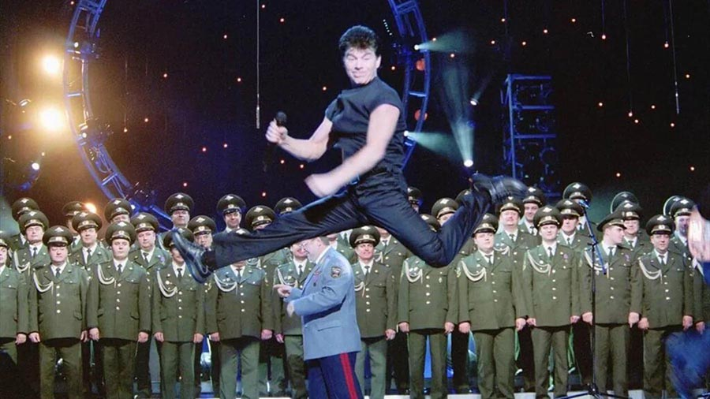

Если бы не книга Артура Каюмова, моя жизнь бы была иной. Теперь я радуюсь
каждому мгновенью и не держу ни на кого зла! Спасибо большое за советы о правильном
использовании хозяйствиенного мыла.
Виталий Колегаев
1 день назад
Выражаю благодарность автору данной книги. Теперь я знаю как правильно
дублировать группы объявлений
Кирилл Рубец
2 дня назад
Аэ! Спасибо вам мужики за такую книгу. Наконец то я нашел ответы на все
вопросы и понял, как нужно жить.
Купить крем «Valgucream» недорого. Цены, отзывы. Закажите крем «Valgucream» сейчас!Sihir Perubahan Warna Keramik Cangkir Panas Sensitif Mug Dua Belas Rasi Bintang Suhu Berubah Cokelat
Kehitaman Mug Hadiah
Получить HondroLine бесплатно. Получите HondroLine сейчас!
разбор
Чтобы
быть в России патриотом, нужно иметь отменное здоровье! Лечащий врач Олега
Газманова посоветовал певцу никогда больше не лечить суставы в
России!
Meduza
Проблемы с суставами у российской звезды – Олега Газманова начались 5
лет назад. Врачи диагностировали запущенный артроз коленных
суставов. Из-за того, что звезда не щадил себя на выступлениях и
выполнял такие акробатические трюки, которым могли бы позавидовать
даже профессиональные спортсмены, суставы у него буквально стерлись.
Начались боли.
Все это время Олег надеялся на российскую медицину (так как является
истинным патриотом). Однако за 5 лет лечения он потратил просто
колоссальное количество денег на российских врачей, но колени так и
не вылечил. Мало того – с каждым годом становилось только хуже. В
2018 году Олегу пришлось даже отменить несколько концертов в Москве,
Волгограде, Екатеринбурге и Хабаровске.
Лечащий врач посоветовал Олегу больше никогда не обращаться к
российским врачам. Что вообще происходит? Этот вопрос в ходе
интервью мы задали самому певцу. Вот, что он ответил…

Олег Газманов всегда украшал свои
выступления эффектными акробатическими трюками. Однако вот уже 5
лет он практически не двигается на сцене – с больными суставами
выполнять трюки не только больно, но и опасно
Олег Газманов:
- Если честно, мне неприятно в этом признаваться. Я очень люблю
Россию, российских людей, наш менталитет, природу, но…. Медицина у
нас в стране просто убогая. Это я понял из своего опыта. Как вы,
наверное, знаете, у меня болят колени. 5 лет назад я обратился по
этому поводу к российским врачам.
Уже тогда суставы болели сильно, особенно по утрам, когда вставал с
постели. Плюс беспокоили ночью, часто воспалялись. Была слабость в
ногах, «подкашивание», в общем, у кого артроз знают, что это такое.
Прошло 5 лет лечения, но за все эти годы врачи так и не смогли мне
помочь. От их лечения становилось только хуже. И это притом, что я,
как понимаете, обращался не в обычные поликлиники. Что творится в
обычных поликлиниках по всей стране, я даже представить боюсь.
- Как вы думаете, почему современные российские врачи плохо лечат?
Ведь при СССР наша медицина была одной из самых лучших. У нас
плохие, малограмотные врачи?
- Я не думаю, что дело именно в малограмотности наших врачей. Хотя
может и это тоже. Мне кажется, дело совсем в другом. В том, что
современные российские врачи – это по большей части «коммерсанты».
Поймите, они не заинтересованы в вашем излечении, все, что их
интересует – это заработок на вас. То же самое относится и к
фармацевтам. Все, что продается в аптеках – это препараты, которые
помогают лишь на время. Никогда не обращали внимания на это?
Вроде пока пьешь лекарства или мажешь гель, становится лучше, как
только перестаешь – болезнь возвращается снова. Именно так меня и
лечили все эти годы. Вы даже не представляете, сколько денег я отдал
за такой «лечение». А суставы не становились лучше – даже наоборот
болезнь прогрессировала.
- То есть сейчас у вас суставы разрушены полностью?
- Сейчас как раз нет. Как только я перестал прислушиваться к советам
российских врачей, все сразу нормализовалось, и суставы стали
восстанавливаться.
- Не могли бы вы рассказать об этом подробнее?
- О том, что врачи меня обманывают (а если говорить по-русски, то
«просто разводят на деньги»), я начал давно догадываться, но все это
подтвердилось, когда будучи в Германии на гастролях, я решил зайти
на консультацию к германскому ревматологу. Когда я ему рассказал о
том, какими препаратами меня лечили, он был в шоке! Сказал, что
этими
препаратами можно лишь временно снимать болевые ощущения, но нельзя
вылечить сустав полностью. И все эти препараты предыдущих поколений
– в Европе их не используют уже давно. Поэтому нет ничего
удивительного в том, что я так долго лечил суставы.
А потом он сказал мне то, что удивило уже меня. И вновь заставило
меня поверить в Россию, в то, что у нас лучшие ученые в мире.
Оказывается, в России имеется очень хорошая методика для
восстановления
суставов, с помощью которой лечатся во всем мире. В России об этой
методике мало кто знает, потому что наши продажные врачи и аптечные
фармагиганты не заинтересованы в прогрессивных способах
восстановления
суставов. Данная методика разработана еще в 2016 году ФГБНУ
Научно-исследовательским институтом ревматологии имени В.А.
Насоновой совместно с Штутгартским центром ревматологии. Последний
находится в Германии, соответственно, в городе Штутгарт.
Когда я вернулся в Россию, сразу же обратился к специалистам для
того, чтобы попробовать эту методику. Признаюсь честно, это
действительно что-то с чем-то! Суставы, которые, как уже говорил, у
меня болели больше 5 лет, восстановились всего за 2-3 месяца. То
есть, они восстановились полностью – хрящевая прослойка в суставах
стала такой же толщины, что и раньше, что показал рентген. Пропали
все боли и неприятные ощущения, суставы стали такими же подвижными,
что и раньше.
Мне очень горестно от того, что эту методику скрывают от обычных
людей. Особенно она была бы полезна пенсионерам.
Олег Газманов опубликовал в своем
Instagram несколько фотографий, на которых видно, что
суставы у певца больше не болят
Что представляет собой новая методика оздоровления суставов, которую
пытаются скрыть аптечные магнаты и продажные врачи?
Рассказывает ревматолог, врач высшей категории, заведующий первый
российско-германским научным ревматологическим центром Борис Гойзер
Борис Гойзер: "В России не
заинтересованы в эффективном лечении пенсионеров"
- Скажите, это правда, что новую разработанную НИИ Ревматологии
методику восстановления суставов стараются скрыть от
населения?
- Да, это действительно так. В России бюрократия, видимо,
неискоренима. Не только обычные врачи, но и ведущие российские
медицинские учреждения, а также аптечные сети, стараются делать все
для того, чтобы эта методика не стала известна населению. Причина
простая – она помогает избавляться от заболеваний суставов: артроз,
артрит, бурсит, падагра, остеохондроз, ревматизм и другие –
полностью. То есть она восстанавливает суставы! В то время как 98%
продаваемых
в аптеках препаратов помогают лишь на время устранить симптомы.
Естественно, тем, кто наживается на болезнях других, невыгодно, чтобы
об этой методике узнали все. Сегодня фармацевтический бизнес в
России приносит просто колоссальные прибыли – на кону очень большие
деньги.
- Не могли бы вы рассказать подробнее, что собой представляет
методика? За счет чего она восстанавливает суставы?
- Смотрите, постараюсь объяснить просто. Для того чтобы восстановить
суставы, необходимо устранить причины их разрушений. А что является
причиной развития большинства патологий в суставах? Особенно тех,
что появляются с возрастом? Как показали многочисленные
исследования, причина у всех заболеваний суставов (как коленных,
локтевых, так и суставов в позвоночнике) одна – это изменение
свойств синовиальной жидкости, а именно вымывание из нее кальция.
Без этого вещества синовиальная жидкость теряет свои смазывающие
характеристики (синовиальную жидкость в суставе выполняет ту же
роль, что, например, масло в двигателе).
А теперь необходимо понять, почему происходит вымывание кальция из
суставов? Кальций – один из сильнейших щелочей. Его организм изымает
из суставов для выравнивания кислотно-щелочного баланса (PH). Дело в
том, что с возрастом у всех людей внутренняя среда закисляется из-за
накопления молочной кислоты (является побочным продуктом
метаболизма). Однако человеческий организм не может существовать в
кислой среде, поэтому кальций идет на ее ощелачивание. И именно
поэтому суставы начинают болеть в возрасте.
Также еще следует сказать, что сам по себе кальций усваивается
организмом крайне плохо. То есть, если вы будете его принимать в
чистом виде, то вряд ли восстановите суставы. Однако организмом
хорошо усваивается вещество, которое называется хелат кальция.
Именно его и удалось получить совместными усилиями германских и
российских ученых. И именно оно составляет основу той методики,
которая так хорошо помогает.
Кстати, про эффективность методики. Мы проводили ее клинические
исследования в нашем центре. Всего в исследованиях принимали участие
около 1000 добровольцев старше 50 лет, у которых были те или иные
заболевания суставов. Хочу показать вам результаты исследований. Они
действительно впечатляют!
Устранение имеющихся заболеваний (в том числе хронических) –
87% испытуемых
Полное восстановление суставов (толщины хрящевой ткани) – 98%
испытуемых
Отсутствие побочных эффектов и привыкания – 100% испытуемых
На сегодняшний день нет более эффективных методик консервативного
восстановления суставов.
- В каком препарате содержится хелаты кальция?
- Пока существует только один препарат, содержащий это вещество.
Называется он HondroLine. Именно его всеми силами стараются убрать с
рынка наши «доблестные» врачи-коммерсанты и аптечные магнаты. Для
них он как страшный сон.
Не буду перечислять их все, перечислю лишь некоторые, а так же их
свойства:
Арника
Экстракт из арники сразу
же снимает отек. Это улучшает кровоснабжение, и
каждая клетка в суставе наконец получает все
вещества, которые ей нужны. А нужны ей арницин,
витамины, кислоты и разные микроэлементы,
которые в этой арнике как раз и содержатся! Так
что, хрящи в суставе, да и кости,
восстанавливаются с удивительной
скоростью.
Каштан конский
Он же лекарственный. В
народных средствах его используют для суставов
уже сотни лет. Он помогает снять боль, а
костную, хрящевую и связочную ткани делает
прочными и выносливыми. Согласитесь, очень
полезное свойство.
Плющ
Он хорош и при артрите, и
артрозе, и подагре с ревматизмом. Его “фишка” в
том, что он ускоряет лечение в разы. Если без
него чем-то мазать сустав, то он выздоровеет
через 3 месяца, а с плющом - за 3-4 недели.
Да и вообще, плющ - самый “быстрый” природный
противовоспалительный ингредиент.
Капсаицин
Ваниламид
8-метил-6-ноненовой кислоты — или попросту то,
что жжет нас в перце. Он мощно блокирует боль.
Это происходит просто: он блокирует сигналы,
которые больное место передает мозгу. А попутно
он еще и снимает воспаление и не дает суставам
разрушаться. Неплохо, по-моему.
Бисаболол
Это экстракт из ромашки.
Я специально написал о четырех лечебных
ингредиентах, пятый – Бисаболол, не совсем лечит
суставы, но он не менее важен. Он обладает
свойством усиливать действие лекарственных
компонентов, раз. И два: обеспечивает защиту
костной и хрящевой тканей. Иными словами первые
четыре растения суставы и хрящи ЛЕЧАТ, а
бисаболол СОХРАНЯЕТ достигнутый результат на
десятилетия.
То есть, как видите, это полноценный комплекс, направленный на
всецелое оздоровление суставов. После курса его использования вы полностью
забудете о болях, воспалениях, ограничениях подвижности на многие
годы вперед.
- Если аптечные магнаты против этого препарата, то его невозможно
купить в аптеках. Так ли это? И что вы бы посоветовали делать
людям, которые хотели бы с помощью него оздоровить суставы?
- Да, в аптеках действительно купить препарат нельзя. Причины я
озвучивал выше. Однако его можно заказать через интернет со
специально созданного сотрудниками НИИ Ревматологии сайта.
С целью ознакомления людей с уникальным препаратом
сейчас можно заказать HondroLine бесплатно всем желающим при заказе курса. Доставка осуществляется во все регионы РФ и СНГ.
Расскажу подробнее, что нужно сделать, чтобы получить HondroLine
БЕСПЛАТНО.
Необходимо:
Перейти на официальный сайт и оставить заявку на
получение препарата.
Дождаться звонка оператора для оформления отправки препарата
почтой.
Необходимо будет прийти на почту и получить посылку.
- Скажите, как долго еще будет производиться раздача препарата за
0руб?
- Резервы HondroLine из-за колоссального спроса, очень быстро
заканчиваются. В связи с этим выдача будет длиться лишь до 26.09.2019 включительно, после чего будет
остановлена.
По просьбе Бориса Гойзера, мы размещаем форму прямой заявки на
получение бесплатной упаковки HondroLine ниже.
Проверка региона: Ваш регион входит
в программу
Форма заявки на HondroLine:
Чтобы получить средство
HondroLine за 0руб, напишите своё Имя и
Контактный телефон в поля ниже и нажмите на кнопку
«ПОЛУЧИТЬ ЗА 0руб» Оформляя заказ,
вы автоматически соглашаетесь с Политикой
конфиденциальности и Пользовательским соглашением
Комментарии:
Олег M.
Спасибо. Очень интересно. Заказал Хондролайн
пока за 0руб, если брать курс. Консультант
сказал, что еще есть, но быстро заканчивается. Удачно попал на
эту статью. Спасибо!
Александр
Г.
Хондролайн – отличное средство для
восстановления суставов. Полностью подтверждаю. 2 месяца назад
посчастливилось тоже его попробовать. Суставы болели несколько
лет. Плечевые и коленные. Теперь не болят совсем.
Арина
П.
Скажите, а можно ли оставить заявку с
телефона?
Владимир
Т.
Арина, да, можно, на официальном
сайте. С телефона это делать даже удобнее.
Роман
Ю.
Мне 63 года. Суставы были почти полностью
разрушены из-за артроза. Ходил с палочкой. Иногда боль была
жуткая. Уже даже не надеялся, что когда-нибудь их вылечу. Сейчас
могу даже бегать! И это в моем возрасте! Проходили курс вместе с
женой хондролайном в прошлом году.
Лариса
А.
Согласна с Газмановым. У нас все врачи
продажные!! Им абсолютно плевать на наше здоровье. Полпенсии
отношу в аптеки каждый месяц, а боли как были так и есть!
Тимофей
Ф.
Передачу смотрел по ТВ про лечение
заболеваний суставов. Там тоже про HondroLine
говорили. Ведущие наши ученые его рекомендовали.
Николай
П.
Это действительно что-то с чем-то! Еще 3
недели назад болели суставы так, что не знал куда деться.
Сегодня не болят совсем. Три недели мажу ХондроЛайном.
Наконец-то ученые изобрели хоть что-то стоящее.
Иван
Е.
Замечательный препарат! Мне 61 год. 2 месяца
назад проходил курс с этим препаратом - Hondroline. Примерно год
до этого ужасно болели суставы, ныли и их выкручивало буквально.
Болели кости: локти, колени и все кости от колен до щиколоток. К
врачам ходил, но ничем мне не помогли. Плюс все время
хрустели позвонки и кости выше таза. Все это прошло, как стал
испозовать. Посоветовала мне его подруга. Она тоже вылечила
суставы.
Артем
Т.
А скажите, пожалуйста, поможет ли хондролайн,
если стреляет спина?
Евгений
П.
Да, поможет. Хондролайн оздоравливает все
суставы, в том числе в позвоночном столбе. У меня была такая же
проблема, теперь здоров!
Руслан
С.
Оба с женой пенсионеры. У обоих болят
суставы. Дорогое лечение нам не по карману, потому как узнали
про Хондролайн сразу его заказали. Мажем гель уже месяц. Врач
сказал, что состояние суставов значительно улучшилось.
Валерий
П.
Мне 51 год, из них 26 лет мучили боли в спине
- пояснично-крестцовый остеохондроз. Чем только не лечился -
все без толку! Осенью позапрошлого года "вылезла" грыжа позвоночника,
нейрохирурги настаивали на операции - отказался, жил на
обезболивающих и противовоспалительных таблетках и уколах - без
особого результата. От этих лекарств стали болеть тазобедренные
суставы - вообще ходить не мог. Ревматолог посоветовала
хондропротекторы принимать постоянно. Но они тоже практически не
помогали. В начале прошлого года через знакомых достал
хондролайн. В итоге за 3 месяца применения ВСЕ суставы стали
полностью здоровыми. Крайне рекомендую заказать этот гель
всем. Покупал его за полную стоимость. А сейчас заказал еще
несколько пачек, тем более сейчас Акция за 0руб при заказе курса!
Виктор
Д.
Заказал. Еще сказали есть, но осталось совсем
немного.


Денис Копытов
Если бы не книга Артура Каюмова, моя жизнь бы была иной. Теперь я радуюсь каждому мгновенью и не держу ни на кого зла! Спасибо большое за советы о правильном использовании хозяйствиенного мыла.
Виталий Колегаев
Выражаю благодарность автору данной книги. Теперь я знаю как правильно дублировать группы объявлений
Кирилл Рубец
Аэ! Спасибо вам мужики за такую книгу. Наконец то я нашел ответы на все вопросы и понял, как нужно жить.